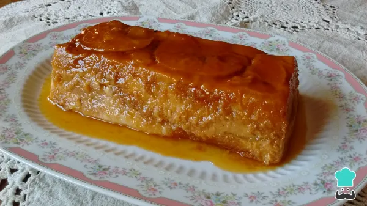
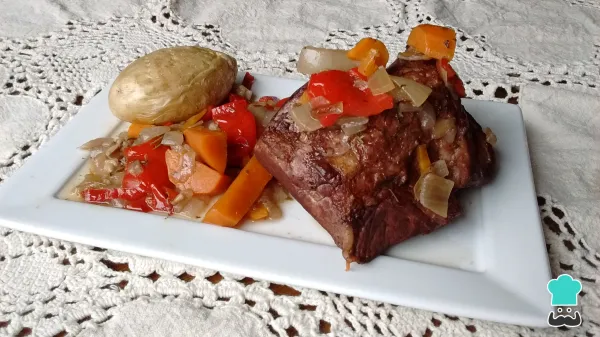
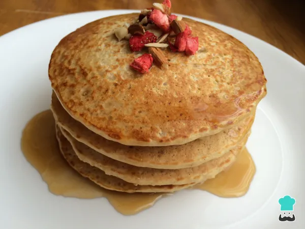
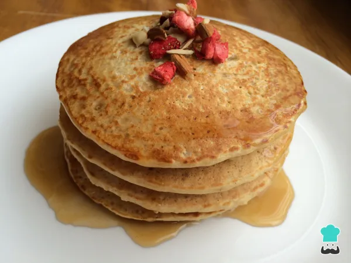
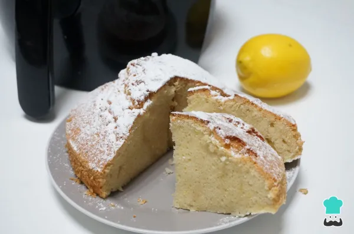

Dificultad: Medio Cocina: Moderna Vegetariana: No Celíacos: No Tiempo: 30 min


Dificultad: Medio Cocina: Tradicional Vegetariana: Sí Celíacos: No Tiempo: 3h

Dificultad: Medio Cocina: Moderna Vegetariana: No Celíacos: No Tiempo: 1h 30 min

Dificultad: Fácil Cocina: Tradicional Vegetariana: No Celíacos: Si Tiempo: 30 min
 

Dificultad: Fácil Cocina: Moderna Vegetariana: No Celíacos: No Tiempo:45 min
